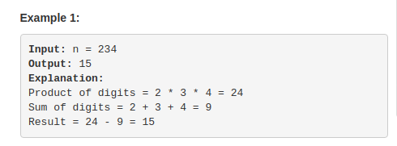
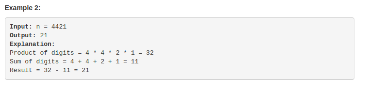
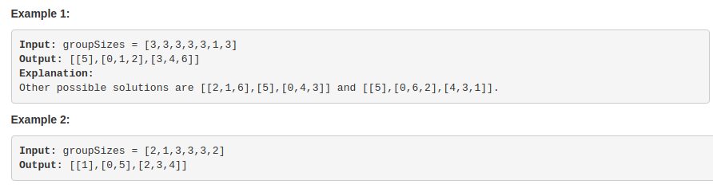
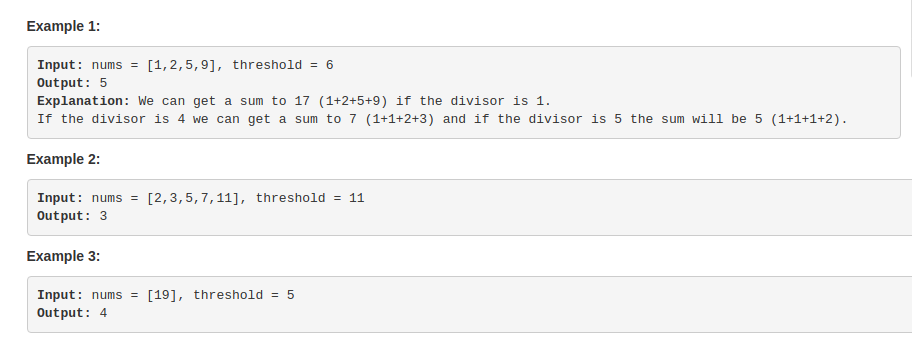
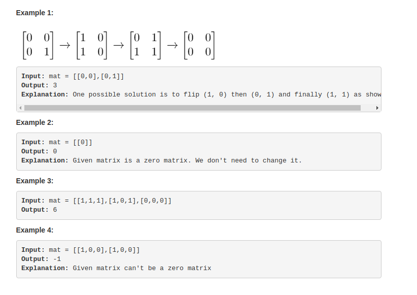
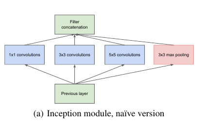
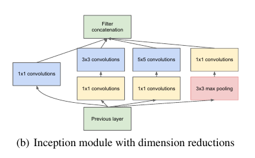
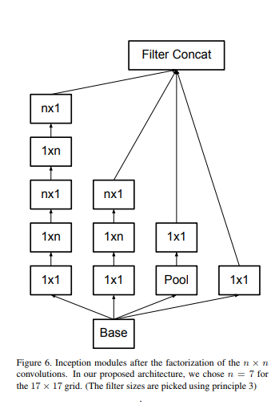
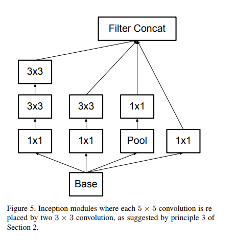
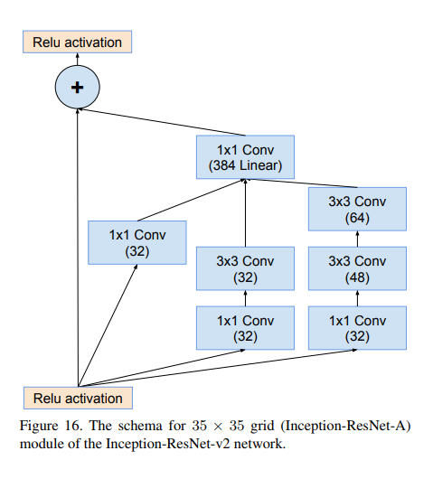

Question 1 : Leetcode 1281 Subtract the Product and Sum of Digits of an Integer
Easy Constraints:
1 <= n <= 10^5


This is a easy question, just need to extract the digits from an integer number. The constrains are 1 <= n <= 10^5, so we do not need to consider the negative value case. Remember the code to decode the digit.
1 2 3 4 5 6 7 8 9 10 11 12 13 14
classSolution { public: intsubtractProductAndSum(int n){ int sum = 0, mul = 1; while(n != 0) { int digit = n % 10; sum += digit; mul *= digit; n = n / 10; } return mul - sum; } };
### Time and space
> - time is : log(n), or constant if n is only int type
> - space : constant
### Special case
n = 1 is one of the special case
1 2 3 4 5 6
1. sum = 0, mul = 1; 2. digit = 1 % 10 = 1; 3. sum = sum + 1 = 0 + 1 = 1; 4. mul = mul * 1 = 1 * 1 = 1; 5. n = 1 / 10 = 0 // (breakin the next loop) 6. return 0;
### Template
Need to remember the code can get the digits
1 2 3 4 5 6 7 8 9 10 11
std::vector<int> getDigits(int n) { std::vector<int> digits; // can not know the size in the begining while(n != 0) { int digit = n % 10; digits.push_back(digit); n = n / 10; // remove the last digits } return digits; }
## Question2: leetcode 1282. Group the People Given the Group Size They Belong To
There are **n** people whose IDs go **from 0 to n - 1** and each person belongs exactly to one group. Given the array groupSizes of length n telling the group size each person belongs to, return the groups there are and the people's IDs each group includes.
You can return any solution in any order and the same applies for IDs. Also, it is guaranteed that there exists at least one solution.
> Medium
### Constraints
groupSizes.length == n
1 <= n <= 500
1 <= groupSizes[i] <= n
n is smaller than 500, I think we can create a matrix for that. However, there is a memory issue. I will list this issue, and see any can sovle this problem or not.

This is a Hashmap problem, and the key value is the group size. We can scan the array, and push the according number’s index to an vector(we are more interested in the index). When the vector size reach to it key, this means the group is full, then we add this vector to the final result, and clear the vector. However, we do not have to use a hash map, we can create a vector>, there is an issue with this solution.
Now I know the problem. When input is [1] or [2,2]. or [8,8,8,8,8,8,8,8] my code used to have problem. I found the reason is the table size was wrong. I used to have table(Gsize); This is not right, when [1] as input, Gsize is 1, and table in this case is 1, so it only have table[0]. This the main problem, need to be taken care of in the future.
Time and space
time is : O(n)
space : O(n^2), used for the table;
Question3: leetcode 1283. Find the Smallest Divisor Given a Threshold
Given an array of integers nums and an integer threshold, we will choose a positive integer divisor and divide all the array by it and sum the result of the division. Find the smallest divisor such that the result mentioned above is less than or equal to threshold. Each result of division is rounded to the nearest integer greater than or equal to that element. (For example: 7/3 = 3 and 10/2 = 5). It is guaranteed that there will be an answer.
Medium
Constraints:
1 <= nums.length <= 5 * 10^4
1 <= nums[i] <= 10^6
nums.length <= threshold <= 10^6
Integer can do the job. And array is a big long.

This is a binary search question. From the constrain, we know the range of nums[i], so we can search from 1 to 10^6. This code are borrow from Huahua.
classSolution { public: intsmallestDivisor(vector<int>& nums, int threshold){ auto sums = [&](int d) { int sum = 0; for (int n : nums) { sum += (n + d - 1) / d; } return sum; }; // lambda function int left = 1; int right = 1e6; while(left <= right) { int mid = left + (right - left) / 2; if (sums(mid) <= threshold) { right = mid - 1; } else { left = mid + 1; } } return left; } };
Time and space
time is : O(nlogk), n is the nums length, and k is 1 to 10^6.
space : O(1);
There is a small lambda funciton in the code
Lambda expressions
Constructs a closure: an unnamed function object capable of capturing variables in scope.
1 2 3
[ captures ] ( params ) -> ret { body } [ captures ] ( params ) { body } [ captures ] { body }
use auto to capture the return type, otherwise the lambda is a complicated type. The concept of the whole idea will be discussed in the following post.
Question 4 : Leetcode 1284. Minimum Number of Flips to Convert Binary Matrix to Zero Matrix
Given a m x n binary matrix mat. In one step, you can choose one cell and flip it and all the four neighbours of it if they exist (Flip is changing 1 to 0 and 0 to 1). A pair of cells are called neighboors if they share one edge.
Return the minimum number of steps required to convert mat to a zero matrix or -1 if you cannot.
Binary matrix is a matrix with all cells equal to 0 or 1 only.
Zero matrix is a matrix with all cells equal to 0.

Constraints:
m == mat.length
n == mat[0].length
1 <= m <= 3
1 <= n <= 3
mat[i][j] is 0 or 1.
This is a NP-hard problem, I’d rather to build a memory table for soltuion. because the m and n only [1, 3]. However, we need to use the BFS to every condiction.
Software engineer or programmer? what is the difference? Performance optimization and capacity efficiency sounds very important, but why do I need to care about this? In this post, I will talk about why you need to care about performance when you called yourself a software engineer.
How to define performance
There are several indexs to measure the performance.
Throughput : throughput performance is often expressed as transactions per second, or TPS.
Service latency : service latency is the delay between a client request and a cloud service provider’s response.
Scalability: System easy to scale by adding more computing resources, for example adding more meory or CPUs.
Resource Utilization: computing resource for a unit of request.(CPU memory).
Reliability, not going to discussed int his serious.
What we want are:
Throughput: High
Service latency: Low
Scalability: Easy
Resource Utilization: Less
1 2 3 4 5 6 7 8 9
int i, j; staticint x[4000][4000]; for (i = 0; i < 40000; i++) { for (j = 0; j < 4000; j++) { x[j][i] = i + j; } }
1 2 3 4 5 6 7 8 9
int i, j; staticint x[4000][4000]; for (i = 0; i < 40000; i++) { for (j = 0; j < 4000; j++) { x[j][i] = i + j; } }
Do you know the difference between those two coding styles? Which one is faster? It depends, depends on how the system saves the 2 dimension array. If this is c++ code(it is), the performance would make much difference because of the memory hierarchy.
Ok, there will be several examples related to performance, I am not going to list everything, just let you know why you need to care about performance.
Is this true? Certainly not. When we thinking about coding, performance is the most important concept in our minds.
Winning depends on performance
Performance optimization and capacity efficiency are the most important topics for the IT company. It determines who can provide a better service.
Thinking in performance not only means you need to think in terms of algorithm, but also you need to know how the system works and the system architecture. For example, SSD as a flash cache lets the system have another level of memory, what is memory mountain, what is cache-oblivious algorithm whey they are useful.
All performance topics will be discussed in this TAG: HighPerformance.
I used to do some research in this topic, graph computing. There will be some posts talk about graph computing also. Thanks for reading this.
In this section, I will compare the difference version of inception. Explain how they think, what kinds of problem they what to solve.
Inception v1
The first version of inception is based on the computation efficiency. As we know that, modern computing system are not good at sparse matrix computation, lost of the resource are wasted due to the sparsity. Also, our deep convolutional neural network are a sparse matrix multiplication. So the first idea is to approximate the dense matrix multiplication by using several convolutional together. The original words are “The main idea of the Inception architecture is based on finding out how an optimal local sparse structure in a convolutional vision network can be approximated and covered by readily available dense components”. The original inception module are build based on several different convolutional filters 1x1, 3x3 ,5x5, and a pooling layer. 
However, the number of 5x5 filters are very big compared with 3x3. Also, when adding the pooling units, the merging of their number of output filters equals to the number of filters in the previous stage. So, in the concatenation layer, the input size from the pooling layer concatenated convolutional layers make the output inevitable increase in the number of outputs form state to state. This is the reason they propose the second version.
Inception V2
Inception V2 module is with the demension reduction with 1X1 filter. 1x1 filter are applying dimension reductions and projections wherever the computational requeiremnts would increase too much otherwise.

The 1x1 convolutions are used tp compute reductions before the expensive 3x3 and 5x5 convolutions. They also include the use of rectified linear activation which makes them dual purpose.
Inception V3
Inception V3 is proposed by another paper. It trying to reduce the filter form nxn to 1xn. In this module, they studied the relation of filter size and how to optimize them. For example, they trying to use 2 3x3 filters instead of 1 5*5. Like the filter below.  
Inception V4
Inception V4 also proposed by another paper. The inception of v4’s idea came from ResNet. In that paper, they proposed lots of paper talked about different versions of the neural network connections, especially how to do something similar with the ResNet. 
From the previous post, there is a shape_wrapper class which has basic idea of smart pointer. In this post, I will discuss hwo can we change the shape_wrapper to a smart pointer.
Compare with the shape_wrapper,we can declare the template, then we change the type ‘shape’ to template T in the code body. For the previous case, shape_wraper = smart_ptr.
For now, this smart_ptr have some basic RAII function, it can release the resource when the resource out of its working boundary. However, something is missing.
it can not use * to dereference resource.
It can not use -> to point to the object member.
It can not use when treat it like a boolean operator. We can add some member function to solve this issue.
we can call the copy constructor and assignment constructor as copy, and this is a little bit complicated compare with the previous case. How to implement is not a problem, but how to define it would be carefully defined. For example, the following case:
For the second case, it should report a error during compiling or we need to find a better way to define this? Let us see how can we do this: The simplest case is prohibit the copy constructor and copy assignment constructor.(the difference will be explained at the end of this article). The code can be programmed as following:
Prohibit those two constructor is very easy, it solved one type error. Otherwise, the code -> smart_ptr ptr2{ptr1} will become undefined behavior during runtime, it will release the resource twice and crash the program, but it is find during the complication.
Can we copy the object during the copy smart_ptr? No, nobody will do this, the propose of smart_ptr is reduce the wrapped object copy times. And our point type is shape, but the real pointer should be circle or triangle object. In c++ there is no such a clone method like Java, for common case, there is no other way you can construct a derived class base on a parents type.
Can we swap the owner ship of the smart pointer? Let us look at the code below:
template<typename T> classsmart_ptr { ... smart_ptr(smart_ptr& other) // copy constructor { ptr_ = other.release(); } smart_ptr& operator=(smart_ptr& rhs) // copy assignment constructor { smart_ptr(rhs).swap(*this); // use the copy constructor to build a tmp object based on the rhs // then swap the ownership of this tmp object with the memebr return *this; } ... // define the release function T* release() { T* ptr = ptr_; ptr_ = nullptr; // pointed to a null ptr return ptr; } // define the swap fucntion voidswap(smart_ptr& rhs) { usingstd::swap; swap(ptr_, rhs.ptr_); } ... }
During the copy, we can call other.release() release the ownership of the object. And during the copy assignment, we can swap the ownership with the temporary object during the copy construction (the first line in the copy assignment constructor). If you learn something like
1
if (this != &rhs) then ...
this is redundant, and not safe. If something wrong happened during the assignment and through out something, the original object might be already broken, and it is not a complete object anymore.
This is common case to make sure the strong exception safety. Copy assignment has two steps, the first step is copy then swap, and the exception can only happen in the first step. And if the exception is in the first step, there will be on affect on the this object(because during the copy this is intact). So weather the copy is successful or not, the result only has two types, sucsssfulled assigned or not, and both of the types are not going to destroy the original object.
However, our smart_ptr works in some situation, but it is very easy to make mistake. Because, after you assign the object, the original object loss the ownership which is very easy for programmer to make mistakes.
This is how the auto_ptr define in c++98, and it is deleted from std in c++17.
“Move” pointer
Let’s see how can we use move to optimize the start_ptr.
In the copy constructor I have changed the smart_ptr& tp smart_ptr&&; So this is not copy constructor anymore, this is move constructor.
In the assignment constructor the input change from smart_ptr& to smart_ptr, this
is copied version compared with the previous one. We do not need to generate a temporary object. For right now, the assignment is a copy or move totally depends on the constructor using copy constructor or move constructor. The result is shown below:
1 2 3 4 5 6
smart_ptr<shape> ptr1{create_shape(shape_type::circle)}; smart_ptr<shape> ptr2{ptr1}; // complication error. ptr1 will loss the ownership smart_ptr<shape> ptr3; ptr3 = ptr1; // complication error. ptr1 will loss the ownership ptr3 = std::move(ptr1); // OK, programmer knows it will loss the ownership smart_ptr<shape> ptr4{std::move(ptr3)}; // OK
This is like the unique_ptr.
derived pointer type change to father type
There is a small defect, for the above case. For example, circle can directly change to shape according to hwo circle defined. However, smart_ptr can not change to smart_ptr. We can add some template code to make it works. For our implement, we can add a constructor.
By doing this, smart_ptr<circle> can move to smart_ptr<shape>. However, we have a better way to dothis, will discussed in the following chapter.
### Reference Counting unique_ptr is a safe smart pointer. However, one object can only has one unique pointer not works for all cases. For some cases, we need to define an object pointed by several objects, and when no one point to the object, its will call the destructor to delete itself. This is the basic idea for share_ptr.
So different shared_ptr can share one object, and count how many pointer pointed to it. Our implement: ```cpp classshared_count { public: shared_count(); voidadd_count(); longreduce_count(); longget_count()const; };
This shared_count has a constructor and 3 methods.
add counter.
reduce counter.
get the counter. Add counter no return needed, and reduce counter need to return the counter. The calling method can check whether it is the last one pointed to this object. Now, we are not going to implement a multi-tread version, we are using a simplified version for single thread version only.
classshared_count { public: shared_count() : count_(1) {} voidadd_count() { ++count_; } longreduce_count() { --count_; } longget_count()const { return count_; } private: long count_; }; ``` Now we can revise our smart pointer, constructor and destructor andprivate member functions. ```cpp template<typename T> classsmart_ptr { public: explicitsmart_ptr(T* ptr = nullptr) : ptr_(ptr) { if(ptr) { shared_count_ = new shared_count(); } } ~smart_ptr() { if (ptr_ && !shared_count_->reduce_count()) { delete ptr_; delete shared_count_; } } private: T* ptr_; shared_count* shared_count_; }
Compare with the previous version, the constructor construct a sharedconut. And the destructor will check the ptr empty or not. If it is not empty reduce the count, and if the reducecount return a 0, then delete the ptr and sharedcount object. We need a new swap function.
smart_ptr(const smart_ptr& other) // copy constructor { ptr_ = other.ptr_; if(ptr_) { other.shared_count_ -> add_count(); // add a count to the previous object shared_count_ = other.shared_count_; // shared_count_ is a common object across all the object } }
template <typename U> smart_ptr(const smart_ptr& other) { ptr_ = other.ptr_; if (ptr_) // ptr_ is not nullptr { other.shared_count_ -> add_count(); shared_count_ = other.shared_count_; } }
template<typename U> smart_ptr(smart_ptr<U>&& other) // move constructor, transfer the ownership { ptr_ = other.ptr_; if (ptr_) { shared_count_ = other.shared_count_; other.ptr_ = nullptr; } }
For copy, if the pointer is not empty, we should add 1 to the counter class, and copy the counter class pointer. For move, we do not need to change the reference counting, just change the original object pointer to nullptr. However, the code above have some complication error.
1 2 3 4 5 6 7
fatal error: ‘ptr_’ is a private member of ‘smart_ptr<circle>’ ``` The reason is that, the template are not friend between each other, so it can not access the ptr_ and shared_count_. we need to declare the friendship
```cpp template<typename U> friend class smart_ptr
For previous case, we need to release the ownership manually. After the reference counting, we can release the ownership by counting. We need to add one more functon to achieve this.
1 2 3 4 5 6 7 8 9 10 11
longuse_count()const { if (ptr_) { return shared_count_ -> get_count(); // in this case, the return value should not 0; } else { return0; } }
// use this when using the cast fucntion // constructor, do not need to define the return type template<typename U> smart_ptr(const smart_ptr<U>& other, T* ptr) noexcept { ptr_ = other.ptr_; if(ptr_) { other.shared_count_-> add_count(); shared_count_ = other.shared_count_; } }
intmain() { smart_ptr<circle> ptr1(new circle()); printf("use count of ptr1 is %ld\n", ptr1.use_count()); smart_ptr<shape> ptr2; printf("use count of ptr2 was %ld\n", ptr2.use_count()); ptr2 = ptr1; printf("use count of ptr2 is now %ld\n", ptr2.use_count()); if (ptr1) { puts("ptr1 is not empty"); } }
We will discuss the smart pointe later, thanks for reading this. I will try my best to post more technique blog.
Assets are non-post files in the source folder, such as images, CSS or JavaScript files. For instance, If you are only going to have a few images in the Hexo project, then the easiest way is to keep them in a source/images directory. Then, you can access them using something like regular image called in MK.
Post Asset Folder
For users who expect to regularly serve images and/or other assets, and for those who prefer to separate their assets on a post-per-post basis, Hexo also provides a more organized way to manage assets. his slightly more involved, but very convenient approach to asset management can be turned on by setting the post_asset_folder setting in _config.yml to true.
1 2
_config.yml post_asset_folder:true
With asset folder management enabled, Hexo will create a folder every time you make a new post with the hexo new
1
[layout] <title> command.
This asset folder will have the same name as the markdown file associated with the post. Place all assets related to your post into the associated folder, and you will be able to reference them using a relative path, making for an easier and more convenient workflow. What is relative path?
Tag Plugins For Relative Path Referencing
Referencing images or other assets using normal markdown syntax and relative paths may lead to incorrect display on archive or index pages. with the release of Hexo 3, several new tag plugins were added to core. These enable you to reference your assets more easily in posts:
For example, with post asset folders enabled, if you place an image example.jpg into your asset folder, it will not appear on the index page if you reference it using a relative path with regular ! [] (/example.jpg) markdown syntax (however, it will work as expected in the post itself). The correct way to reference the image will thus be using tag plugin syntax rather than markdown:
1 2
{% asset_img example.jpg This is an example image %} {% asset_img "spaced asset.png""spaced title" %}
This way, the image will appear both inside the post and on index and archive pages.
Scaffold folder. When you create a new post, Hexo bases the new file on the scaffold.
source
Source folder. This is where you put your site’s content. Hexo ignores hidden files and files or folders whose names are prefixed with _ (underscore) - except the _posts folder.Renderable files (e.g. Markdown, HTML) will be processed and put into the public folder, while other files will simply be copied.
themes
Theme folder. Hexo generates a static website by combining the site contents with the theme.
Configuration
You can modify site settings in _config.yml
Site
Site Setting and its description: title: The title of your website subtitle:The subtitle of your website description: The description of your website keywords: The keywords of your website. Separate multiple keywords with commas ,. author: Your name language: The language of your website. Use a 2-letter ISO-639-1 code or optionally its variant. Default is en. timezone: The timezone of your website. Hexo uses the setting on your computer by default. You can find the list of available timezones here. Some examples are America/New_York, Japan, and UTC.
URL
Setting
Description
Default
url
The URL of your website
root
The root directory of your website
permalink
The permalink format of articles
:year/:month/:day/:title/
permalink_defaults
Default values of each segment in permalink
pretty_urls
Rewrite the permalinkvariables to pretty URLs
pretty_urls.trailing_index
Trailing index.html, set to false to remove it
true
Commands
init
1
$ hexo init [folder]
new
1
$ hexo new [layout] <title>
Creates a new article. If no layout is provided, Hexo will use the default_layout from _config.yml. If the title contains spaces, surround it with quotation marks.
Option
Description
p, —path
Post path. Customize the path of the post.
-r, —replace
Replace the current post if existed.
-s, —slug
Post slug. Customize the URL of the post.
By default, Hexo will use the title to define the path of the file. For pages, it will create a deirectory of that name and an index.md file in it.Use the —path option to override that behaviour and define the file path:
1
hexo new page --path about/me "About me"
page teamplate is in the scaffolds folder. will create source/about/me.md file with the title “About me” set in the front matter. Please note that the title is mandatory. For example, this will not result in the behaviour you might expect:
1
hexo new page --path about/me
will create the post source/_posts/about/me.md with the title “page” in the front matter. This is because there is only one argument (page) and the default layout is post.
generate
1
$ hexo generate
Option
Description
-d, —deploy
Deploy after generation finishes
publish
1
$ hexo publish [layout] <filename>
Publishes a draft. Move the file from draft to post folder.
Writing
To create a new post or a new page, you can run the following command:
1
$ hexo new [layout] <title>
post is the default layout, but you can supply your own. You can change the default layout by editing the default_layout setting in _config.yml.
Layout
There are three default layouts in Hexo: post, page and draft. Files created by each of them is saved to a different path. Newly created posts are saved to the source/_posts folder.
Layout
Path
post
source/_posts
root
source
draft
source/_drafts
Filename
By default, Hexo uses the post title as its filename. You can edit the new_post_name seting in _config.yml to change the default filename. For example, :year-:month-:day-:title.md will prefix filenames with the post creation date. You can use the following placeholders:
Layout
Path
:title
Post title (lower case, with spaces replaced by hyphens)
:year
Created year, e.g. 2015
:month
Created month (leading zeros), e.g. 04
:i_month
Created month (no leading zeros), e.g. 4
:day
Created day (leading zeros), e.g. 07
:i_day
Created day (no leading zeros), e.g. 7
Draft
Previously, we mentioned a special layout in Hexo: draft. Posts initialized with this layout are saved to the source/_drafts folder. You can use the publish command to move drafts to the source/_posts folder. publish works in a similar way to the new command.
1
$ hexo publish [layout] <title>
Drafts are not displayed by default. You can add the —draft option when running Hexo or enable the render_drafts setting in _config.yml to render drafts.
Scaffolds
When creating posts, Hexo will build files based on the corresponding file in scaffolds folder. For example:
1
$ hexo new photo "My Gallery"
When you run this command, Hexo will try to find photo.md in the scaffolds folder and build the post based on it. The following placeholders are available in scaffolds:
Layout
Path
layout
Layout
title
Title
date
File created date
Front-matter
Front-matter is a block of YAML or JSON at the beginning of the file that is used to configure settings for your writings. Front-matter is terminated by three dashes when written in YAML or three semicolons when written in JSON.
The keywords that only used in meta tag and Open Graph (not recommended
excerpt
Page excerpt in plain text. Use this plugin to format the text
Categories & Tags
Only posts support the use of categories and tags.
Categories apply to posts in order, resulting in a hierarchy of classifications and sub-classifications.
Tags are all defined on the same hierarchical level so the order in which they appear is not important. Example
categories:
Sports
Baseball
tags:
Injury
Fight
Shocking
If you want to apply multiple category hierarchies, use a list of names instead of a single name. If Hexo sees any categories defined this way on a post, it will treat each category for that post as its own independent hierarchy. Example
Welcome to Hexo! This is your very first post. Check documentation for more info. If you get any problems when using Hexo, you can find the answer in troubleshooting or you can ask me on GitHub.